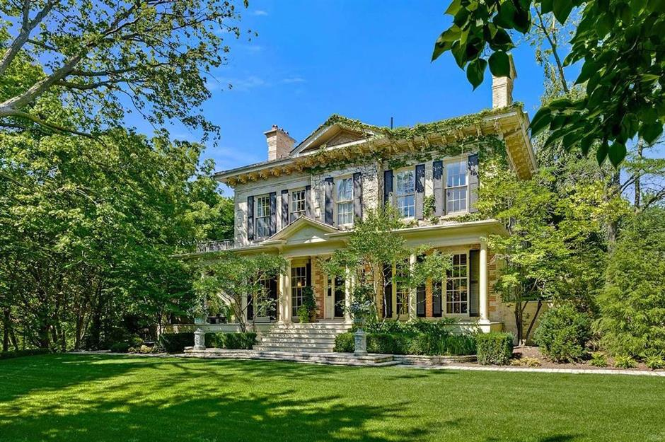

Bully offers with no conditions are popping up in small real estate markets, too
When people picture red-hot real estate markets, they most likely think of soaring prices for the condos dotting Vancouver's skyline.
They might also conjure up the bidding wars for massive mega-mansions in and around Toronto.
But they're likely not thinking about properties
like Barb Armstrong's quiet bungalow in picturesque Perth Ont. about an hour southwest of Ottawa. Even so, Armstrong's four bedroom, three-bathhome was swept up into a bidding war worthy of any big city this month. It soldfor $150,000 over her asking price of $529,900 -and the offer didn't come with any conditions. "It was quite a shock to see that that amount of moneywas coming our way for sure," she said.
"It was over our expectationHe's looking to downsize into something newer with less maintenance as he heads into retirement but he can't find anything that fits the bill, even though he's casting a wide net and is willing to compromise. "Most of the places that I requested to view are sold before I actually get a foot out the door," he said.
Reese-Hansen recently lined up four newly listed homes to see that he thought had potential. Just as he hopped in the car to drive down the highway to see them, his real eastate agent called to say they were already gone. Canada's housing market is indeed flush with cash at the moment, with the national average selling price hitting an all-time high of $678,091 in February. That's up more than 25 per cent from the same month last year, pre-pandemic.
While there's a perception that high prices are mostly a problem in big cities like Toronto and Vancouver, sales are booming just about everywhere, with bully offers becoming the norm. Paul Martin, president of the Rideau St Lawrence Real Estate Board that covers Perth, Ont., where the Armstrongs live, says "the market just took off," last year. "We've seen our property prices jump close to 50 per cent in the area," he said.About a third of the new buyers are from Toronto, he says, despite the region being about three hours from the city. About half are from Ottawa, which is closer but still up to an hour away. Underpinning the frenzy are record low interest rates, which are lower than they've ever been, built on the back of Canada's central bank slashing its lending rate to practically zero to stimulate the economy out of COVID-19.
Economist Mike Moffatt, senior director at the Smart Prosperity Institute, an Ottawa-based think-tank, says low mortgage rates are key to what's happening, but they're not the only factor. If it were just cheap lending, markets should be heating up fairly evenly across the country. But they're not. Some smaller towns an hour or more outside the orbit of large urban centres are faring better in real estate than some big cities.
Though he lives in Ottawa, Moffatt hails from southwestern Ontario and he says affordability issues were a problem there even before the pandemic because of supply and demand issues. The area's population was increasing largely from new immigrants and foreign students, and now pandemic-era low rates have poured gasoline on those fires. "Cottage country places in southwestern Ontario — Woodstock, Ingersoll, Tillsonburg — those are the places seeing the big price increases," he said.The numbers back that up. According to data from the Canadian Real Estate Association, prices in Owen Sound are up by 29 per cent in the year up to February 2021. They're up 39 per cent in Tillsonburg, by 36 per cent in Woodstock, and by 26 per cent in Guelph. All those markets have fared better than the Greater Toronto Area, where CREA's House Price Index has risen by about 14 per cent in the same time frame.
"It's fuelled by that the coupling of white-collar professionals who have a lot of money right now and globally low interest rates." Buyers in small towns are finding themselves priced out of their own markets because local salaries can't compete with the buying power of out-of-towners.
"We're going to have a lot of both political and economic problems if we price an entire generation of young families from ever owning a home," Moffatt said. Back in B.C., the frenzy is so great that some people are resorting to buying without ever setting foot in their new homes. That's what happened to Ean Jackson and his wife Sibylle Tinsel. They recently sold their home in Vancouver and were looking to downsize somewhere farther afield.
The couple settled on the tiny community of Powell River, B.C., about 100 kilometres up the coast. They have friends in the area so it was always a long-term plan, but their home sale sped up their timeline. There were few houses available when they started looking, and what was there was hard to see given pandemic restrictions. "We couldn't get up there in time to even see the place," Jackson said in an interview. So they did what millions of Canadians did while shopping for consumer goods this year — they shopped online and hoped for the best.